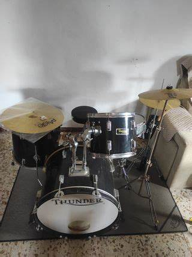
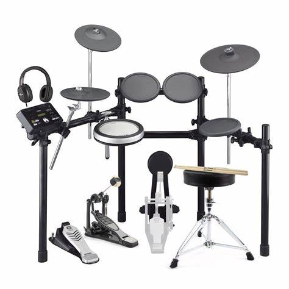
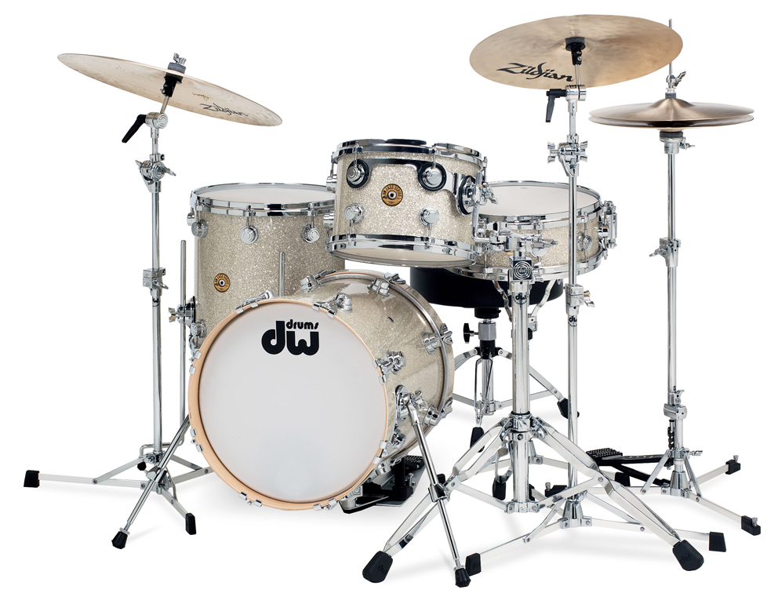
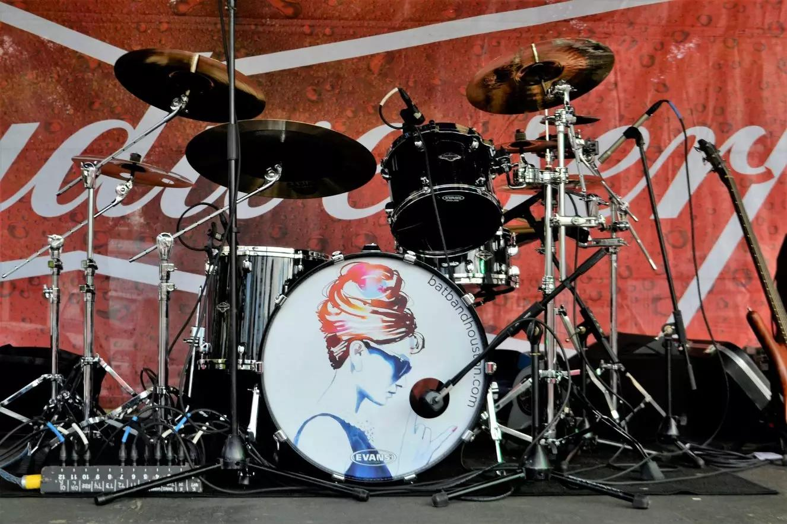
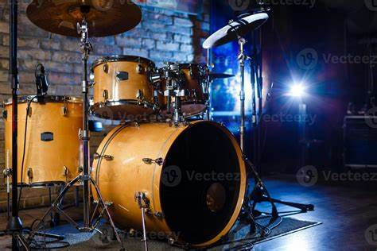

Bienvenido al Blog
Descubre todo sobre las baterías musicales, su historia, tipos y cómo se han convertido en el corazón de muchas bandas alrededor del mundo.
Este blog está dedicado a músicos, entusiastas y curiosos que desean aprender más sobre este instrumento fascinante que da ritmo y energía a todas las melodías. Acompáñanos en este recorrido lleno de datos interesantes y consejos útiles.
Video Destacado
Explora cómo las baterías pueden transformar una canción en una obra maestra con este emocionante video.
Galería
Una selección de imágenes que muestran diferentes tipos de baterías y configuraciones.
- 
- 
- 
- 
- 